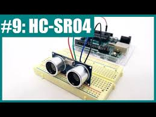

Interfacing Ultrasonic Sensor with Arduino
Learn how to use an HC-SR04 ultrasonic sensor to measure distance with an Arduino.
Step 1: Gather Components
- Arduino Uno
- Ultrasonic Sensor (HC-SR04)
- Jumper Wires
- Breadboard
Step 2: Wiring the Sensor
Connect the ultrasonic sensor to the Arduino:
- VCC to Arduino 5V
- GND to Arduino GND
- Trig Pin to an Arduino Digital Pin (e.g., Pin 9)
- Echo Pin to an Arduino Digital Pin (e.g., Pin 10)
Step 3: Arduino Code
// Placeholder for Ultrasonic Sensor Arduino Code
const int trigPin = 9;
const int echoPin = 10;
long duration;
int distance;
void setup() {
pinMode(trigPin, OUTPUT);
pinMode(echoPin, INPUT);
Serial.begin(9600);
}
void loop() {
// ... (rest of the code for measuring distance)
digitalWrite(trigPin, LOW);
delayMicroseconds(2);
digitalWrite(trigPin, HIGH);
delayMicroseconds(10);
digitalWrite(trigPin, LOW);
duration = pulseIn(echoPin, HIGH);
distance= duration*0.034/2;
Serial.print("Distance: ");
Serial.print(distance);
Serial.println(" cm");
delay(1000);
}
Step 4: Upload and Monitor
Upload the code to the Arduino and open the Serial Monitor to see the measured distance.
